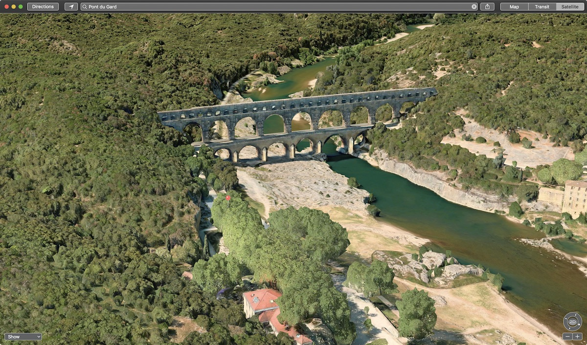

Open Image Location in Maps
Since many images are shot using cellphones, they often contain GPS metadata indicating the location coordinates of the camera when the image was captured.

Using this AppleScript script, you can reveal an image’s location in the Maps application.
| DO THIS ► | DOWNLOAD a zip archive (24mb) containing the Pixelmator example images, and the example AppleScript script file. |
The AppleScript Script
Here are the AppleScript script that automates the process of extracting the location metadata from the image and showing the location in the Maps application.
use AppleScript version "2.4" -- Yosemite (10.10) or later
use framework "Foundation"
use scripting additions
property zoomLevel : 19 -- between 2 to 21
property mapViewType : "k" -- m (standard view), k (satellite view), H (hybrid view), r (transit view)
property shouldIncludeMapPoint : true
tell application id "com.pixelmatorteam.pixelmator.x"
activate
tell front document
set pointTitle to the title of document info of it
if pointTitle is "" then
set pointTitle to the name of it
end if
set pointTitle to my encodeUsingPercentEncoding(pointTitle)
set mapCoords to the location of the document info of it
if mapCoords is {missing value, missing value} then
display alert "MISSING DATA" message "This image does not contain location metadata." buttons {"Cancel"} default button 1
error number -128
end if
copy mapCoords to {latitude, longitude}
if shouldIncludeMapPoint is false then
set mapURL to "http://maps.apple.com/?ll=" & latitude & "," & longitude & "&z=" & zoomLevel & "&t=" & mapViewType as string
else
set mapURL to "http://maps.apple.com/?ll=" & latitude & "," & longitude & "&z=" & zoomLevel & "&t=" & mapViewType & "&q=" & pointTitle as string
end if
end tell
end tell
tell application "Maps"
activate
open location mapURL
end tell
on encodeUsingPercentEncoding(sourceText)
-- create a Cocoa string from the passed AppleScript string, by calling the NSString class method stringWithString:
set the sourceString to current application's NSString's stringWithString:sourceText
-- apply the indicated transformation to the Cooca string
set the adjustedString to the sourceString's stringByAddingPercentEscapesUsingEncoding:(current application's NSUTF8StringEncoding)
-- coerce from Cocoa string to AppleScript string
return (adjustedString as string)
end encodeUsingPercentEncoding
DISCLAIMER